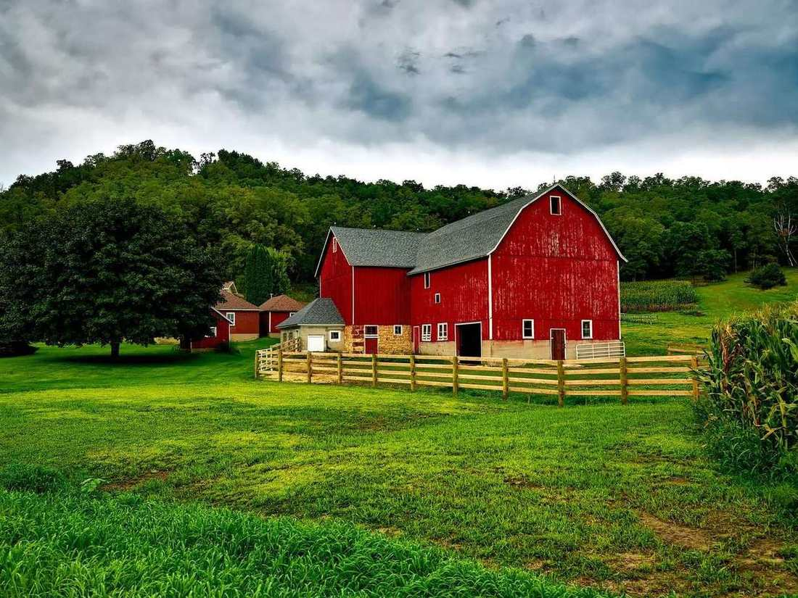

Quem tem página clara leva o clique. Quem só tem fachada espera o produtor lembrar o nome.
Para o dono que atende o produtor
O produtor decide no celular. Seu site precisa aguentar esse olhar.
Eu monto sites com cara de empresa séria para revenda, peças, máquinas, sementes, nutrição e cerealista. Você vê uma prévia antes de dizer sim.
- Sorriso
- Rio Verde
- Luís Eduardo Magalhães
- Dourados

O que muda
Prévia no ar antes de fechar.
O balcão fecha. A decisão não.
Sem site, a empresa some na hora em que o produtor escolhe.
Ele não atravessa a cidade para “dar uma olhada”. Pergunta no grupo, abre o mapa e liga para quem responde com clareza: o que tem, para qual cultura, se chega antes da chuva.
Peça por máquina, defensivo por cultura, semente por janela. Se isso não está escrito, ele pede para outro.
A mensagem chega às 21h. Site é o balcão aberto quando o escritório já fechou.
Demonstrações
Seis sites. Seis jeitos. Nenhum molde.
Marcas, pessoas e depoimentos são fictícios. O nível é o que você leva para a sua empresa. Passe o dedo ou o mouse para ver o site ao vivo.
prévia · várzea insumos

prévia · eixo peças

prévia · planalto máquinas

prévia · cocho cheio

prévia · linha fértil

prévia · silos do vereda

Em vinte segundos
O que o dono percebe quando abre no WhatsApp.
Sorriso, Rio Verde, LEM, Dourados. O produtor reconhece a própria região antes de ler o resto.
Filtra por cultura, por máquina, por serviço. A ficha abre na hora, sem PDF perdido.
Dose, peça, parcela, cocho, janela de plantio ou cotação. Cada ramo com a conta que já faz no papel.
Como funciona
Três passos. O primeiro sim é uma conversa.
Ligação
Você conta a cidade, o ramo e o que o cliente mais pergunta quando encosta no balcão.
Prévia
Eu devolvo um site com a cara da sua empresa, para você abrir no celular e mostrar ao sócio.
Site no ar
Aprovou, publica. WhatsApp, catálogo e a ferramenta do seu ramo passam a atender de noite.
Poucas prévias por vez. Cada uma é desenhada para um ramo, não copiada de um tema pronto.
Dúvidas de quem recebeu o link
Antes de marcar a conversa.
Não. São demonstrações de marcas fictícias, para você ver o nível sem confundir com a empresa do vizinho. A sua prévia nasce do seu nome, da sua cidade e do que você vende.
Não para começar. A prévia sai com o que você tiver. Logo, foto de equipe e catálogo real entram quando você aprovar o caminho.
Sim. O link chega no WhatsApp e abre no telefone. O desenho começa por essa tela, e o computador acompanha.
Não. Ele faz o produtor chegar no vendedor certo, com a pergunta já encaminhada: cultura, máquina, talhão ou lote.
O foco é o agro de Sorriso, Rio Verde, Luís Eduardo Magalhães, Dourados e as cidades em volta: revenda de insumos, peças, máquinas, sementes, nutrição, armazém e irrigação.
A prévia existe para você decidir olhando. A conversa por vídeo é o próximo passo. Sem preço nesta página: a condição sai do tamanho da sua operação.

Próximo passo
Quero uma prévia do meu site.
Manda uma mensagem. Eu te devolvo uma prévia com a cara da sua empresa, para você decidir olhando, não imaginando.
Chamar no WhatsApp